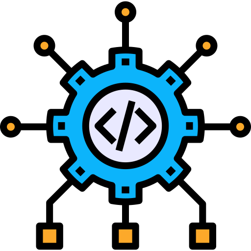
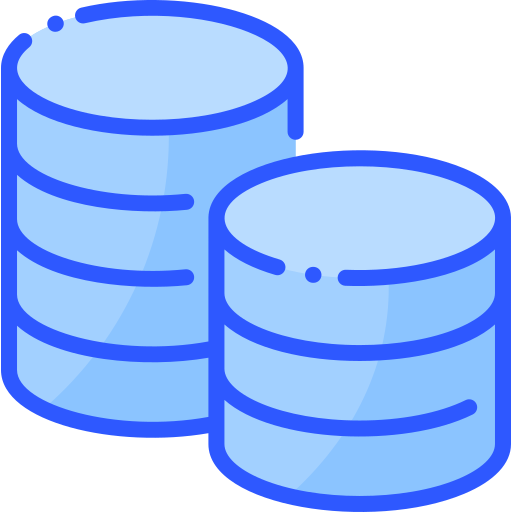

Développement Web
Sites dynamiques et back-end PHP.
- Structuration sémantique avec HTML et mise en forme avec CSS
- Back-end en PHP orienté objet
- Framework Symfony
- Ajout, modification et suppression de données depuis un site web
- E-commerce avec Shopify
Recherche un stage de 8 à 12 semaines
Étudiant en 2e année de BUT Informatique
Développement, systèmes & réseaux. Je conçois des applications web en PHP / SQL, j'administre des serveurs Linux et je m'intéresse de près à la cybersécurité.
Je m'appelle Cem Boyraz, étudiant en 2e année de BUT Informatique à l'IUT de Reims (Université de Reims Champagne-Ardenne), parcours Développement — C++ et conception d'application. J'ai acquis des compétences en Python, PHP, SQL et développement web à travers plusieurs projets universitaires et personnels, du site web connecté à une base de données jusqu'à l'installation complète d'un serveur Linux.
Je recherche aujourd'hui un stage de 8 à 12 semaines en développement, systèmes et réseaux pour mettre ces compétences en pratique en entreprise.
IUT de Reims
Parcours Développement — C++ et conception d'application.
Lycée Hugues Libergier, Reims
Spécialités Mathématiques et NSI (Numérique et Sciences Informatiques).
AZI Construction, Brétigny-sur-Orge
Installation et pose de réseaux de sprinklers sur différents chantiers.
Sites dynamiques et back-end PHP.

Langages compilés et de script.

Conception et exploitation.
Administration et analyse.
Une offre de stage, une question ? N'hésitez pas à me contacter.